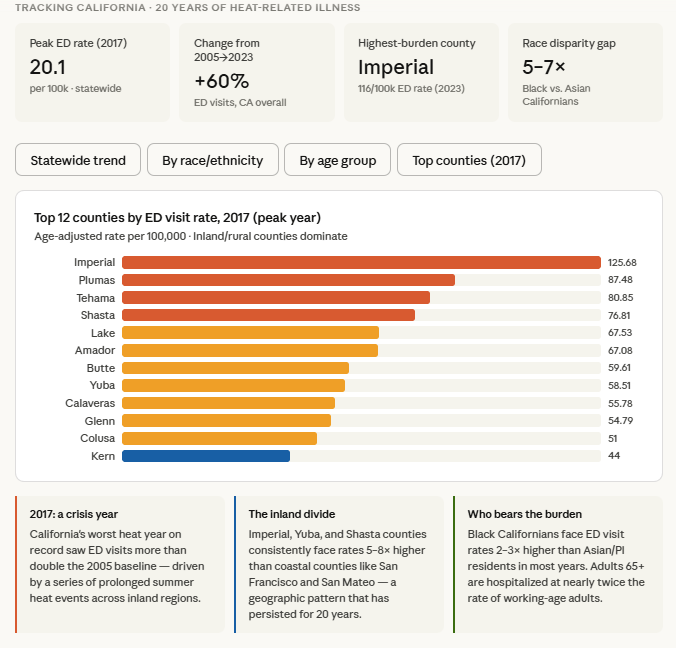

Focus area
Pesticides

California applies more agricultural pesticide than any other state, and the people living closest to it are rarely the people deciding how it is used. Homes, schools and workplaces sit alongside treated fields, and until use is mapped at the scale people actually live at, proximity is impossible to discuss with any precision.
We turn the state’s pesticide-use reporting into something usable: mapped to the field, linked to the places that matter, and open to anyone who needs it. That work underpins research on exposure near schools and during pregnancy, and it gives community advocates and local agencies the same evidence base the state has.
Pesticides show why the data and the partnerships belong together. The mapping makes exposure legible; the community work establishes which questions are worth asking; and the research turns both into evidence that regulators and school districts can act on.
Why it matters
Fields mapped
Agricultural pesticide use mapped at field level across California.
Near schools
Share of public schools within a quarter mile of reported application.
Years of data
Pesticide-use reporting processed into a consistent statewide series.
Our data & tools
Field-level agricultural pesticide use, derived from California’s Pesticide Use Reporting system and mapped to the land it was applied to — plus a linkage service that joins it to study locations, and the open code behind both.
In communities

Partner stories for this area are still to be chosen — two would sit here.
Projects & research
Agricultural Pesticides Near Public Schools
Which schools sit closest to reported application, and who attends them.

Temporal trends of organophosphate use
Peer-reviewed analysis of agricultural organophosphate use and proximity across California.

Using the Pesticide Mapping Tool
A walkthrough of the tool, from a first question to a mapped answer.
In the news
Work with us on pesticides
If you are researching pesticide exposure, planning around application near schools or housing, or need use data linked to your own study locations, we can help you find it and build the partnership around it.